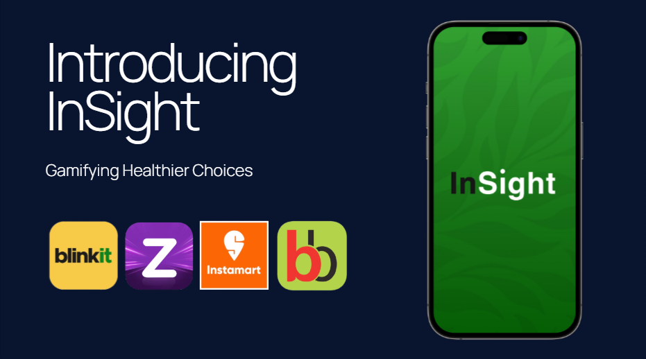

InSight - Making India Healthy

Problem:
India faces a growing NCD crisis, with nearly 70% of deaths linked to unhealthy diets. The rise of Q-commerce, while convenient, has exacerbated this by promoting impulse purchases of ultra-processed foods, ranked among the world's unhealthiest. Current barcode scanner apps are impractical for real-time decision-making.
Solution:
InSight gamifies healthier food choices by integrating directly with Q-commerce platforms. Our app displays real-time product availability and health scores, based on harmful additives and international standards. Users can personalize scores based on individual health conditions. The app simulates orders in the backend, allowing users to receive their usual 10-minute delivery, but with healthier options.
Business Model:
B2C:
Freemium model: Free health ratings on food items. Premium features include personalized health scores for users with specific medical needs (diabetes, hypertension, etc.), pregnant women, parents, and fitness enthusiasts.
B2B:
- Corporate Wellness Programs: Subscriptions for companies to offer employee discounts on healthy orders.
- Insurance Companies: Discounts on healthy orders to reduce claim risks.
- API Licensing: Integration of our health ratings into Q-commerce apps.
InSight Verified:
Independent product testing and verification certificates for FMCG brands and restaurants that meet our quality standards.
TakeCare - AI Assistant for the elderly

Built a PoC for an AI health assistant for elderly patients in India. It listens to doctor-patient convos (English, Hindi, Hinglish) & auto-generates an easy-to-read report. Also lets you order meds, book tests & schedule follow-ups effortlessly.
Step 1: Record Meeting
Click on the record button to record the meeting with your doctor.

Step 2: Detailed Electronic Report & Meds
Proceed to get a detailed easy-to-read electronic report and order the prescribed meds to your home if you want.

Step 3: Meds Ordering
Here is how the meds ordering looks like -- as simple as it can be.

Step 4: Book Tests
Easily book the recommended tests.

Step 5: Schedule Follow-up
Schedule the next visit with the doctor if you want.

Step 6: Download & Share Report
Download the report as a PDF, save it to your G-drive for recordkeeping, share the report with your loved ones.

Future functionality can include integrating Ola/Uber to and from the hospital and a simple QR code that transfers your medical history to the doctor -- for when you visit a new doctor you haven't before, or in case of emergencies.
Outscal: Scaling to 100M+ Views

Problem Statement:
Outscal, in its early-stage as a VC-backed startup, needed to rapidly establish a strong online presence and drive user acquisition. The challenge was to achieve significant growth in a cost-effective and highly scalable manner, specifically on YouTube, to attract potential users to the Outscal platform.
Methodology:
To address this, I developed and implemented a focused YouTube Shorts strategy, leveraging AI assistance to maximize content creation efficiency. This involved:
- Full-Cycle Ownership: I managed the entire social media marketing lifecycle, including research, SEO optimization, copywriting, scripting, design, and video editing.
- AI-Assisted Content Creation: Employed AI tools to streamline the creation of short-form video content, increasing output and maintaining quality.
- Data-Driven Experimentation: Worked directly with the founder to lead rapid data-driven experimentation, continuously analyzing growth and engagement metrics to refine the strategy.
- Multi-Platform Management: Integrated YouTube strategy with management of other social media platforms including LinkedIn, Instagram, TikTok, and Discord to ensure a cohesive brand presence.


Results:
The implemented strategy led to significant results:
- Substantial Subscriber Growth: The YouTube channel grew from 0 to 50,000+ subscribers.
- Massive Viewership: Achieved over 100 million views on YouTube.
- Platform Traffic: Drove 30,000+ unique users to Outscal's platform from YouTube.
- High Engagement: Attained a peak Click-Through Rate (CTR) of 7.2%.
Money Mafia S3
Project Overview:
I contributed to the production of "Money Mafia S3," a gripping four-part documentary series that delves into the shadowy underbelly of Mumbai's economy. The series fearlessly uncovers the inner workings of some of India’s most audacious rackets, including extortion, gold smuggling, drug trafficking, and hawala operations, offering viewers an unfiltered look into this sprawling parallel world.
My Role:
This project marked a significant milestone in my career as a Director’s Assistant. It provided invaluable experience collaborating with VICE and Discovery, two studios renowned for their impactful documentary filmmaking, whose work has long been a source of inspiration for me. My responsibilities spanned across various crucial aspects of production:
- End-to-End Production Management: Oversaw the complete production lifecycle of the series.
- Script Development: Managed the script writing process, ensuring narrative coherence and accuracy.
- Client Communication: Served as a key point of contact for client communication, maintaining clear and effective collaboration.
- On-Set Logistics: Handled all on-set logistics, ensuring smooth and efficient filming.
- Creative Direction: Directed art and prop coordination to maintain the series' creative vision.
- Cross-Departmental Coordination: Collaborated closely with cinematographers, sound designers, composers, and line producers to achieve seamless execution.
Memesys Culture Lab
Project Overview:
During my time at Memesys Culture Lab, I played a key role in developing and producing a series of short reels focused on science communication. These reels aimed to translate complex scientific concepts into engaging and accessible visual narratives for a wider audience. One notable reel was created for the Instagram page of Anand Gandhi, the acclaimed Indian filmmaker, entrepreneur, media producer, innovator, and systems researcher.
Conceptual Approach:
The reel created for Anand Gandhi was a 60-second visual exploration of the limitations of perception. Drawing inspiration from Edwin Abbott Abbott’s seminal 1884 book, "Flatland: A Romance of Many Dimensions," the video offered a thought-provoking perspective on how our understanding of reality is often constrained by our inherent biases and limited viewpoints.
Key Responsibilities:
Across the science communication reels, including the one for Anand Gandhi, my responsibilities encompassed the full creative and technical process:
- Conceptualization and Storyboarding: Developed the core concepts and created visual storyboards to guide the reels' narratives.
- Scripting and Copywriting: Crafted concise and impactful text to accompany the visuals, enhancing the reels' message and clarity.
- Visual Design and Art Direction: Oversaw the visual aesthetic, ensuring alignment with the project's conceptual goals and maintaining a high level of visual appeal.
- Video Editing and Post-Production: Personally edited and produced the final reels, incorporating visual effects, sound design, and music to create polished and engaging pieces.
- Platform Optimization: Tailored the reels specifically for various social media platforms (primarily Instagram), considering their format, audience, and best practices.
Le Secret De Jihane
Project Overview:
"Le Secret De Jihane" is an audio documentary that I created, exploring a captivating moment of discovery in the life of Jihane Bougrine—a multifaceted artist who is a journalist, singer, and songwriter.
Narrative Focus:
The documentary unravels the story of Jihane's encounter with a profound family secret, which she stumbled upon while immersed in a novel by one of her favorite Moroccan writers. This deeply personal revelation served as the creative spark for the genesis of her brilliant song, "Serek F' Bir."
Collaboration and Recognition:
This project was developed in collaboration with the prestigious École Nationale Supérieure Louis-Lumière in Paris and was featured on Arte Radio France's website.
India’s Space Odyssey
Project Overview:
India's Space Odyssey is a compelling documentary produced as a Discovery+ Original, narrating the inspiring story of India's space program. The documentary celebrates the people behind the program and the extraordinary challenges they had to overcome to achieve their ambitious goals.
My Role:
I served as an Assistant Producer for this documentary, contributing to key aspects of its production:
- Production Assistance: Provided support to the Director, Executive Producer, and Chief Video Editor throughout the production process.
- Video Editing: Managed various aspects of video editing to shape the documentary's narrative.
- Interview Management: Coordinated and managed interviews with key individuals involved in India's space program.
- Data Management: Oversaw the organization and management of data and assets related to the documentary.